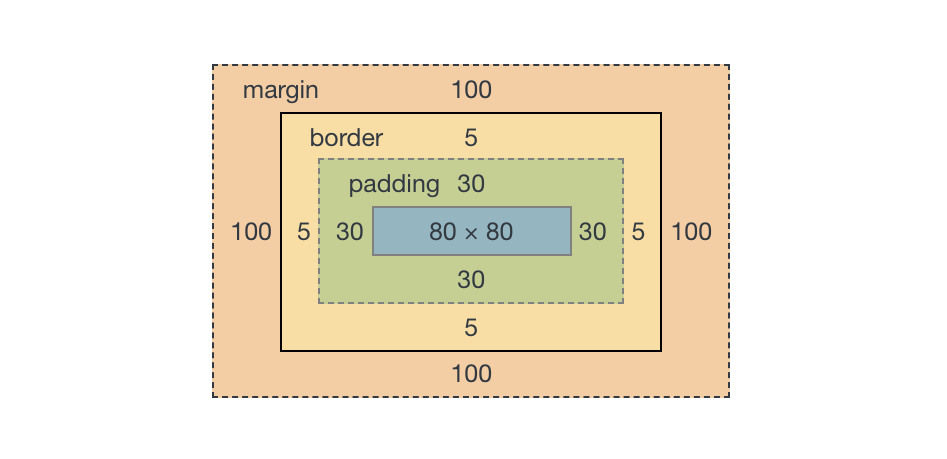
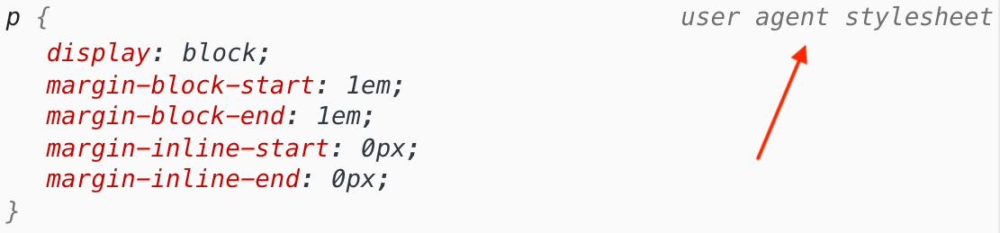

У блокової моделі будь-який елемент - це прямокутний контейнер, незалежно від того, як він візуально представлений на сторінці. В елемента є область вмісту і необов'язкові поля, відступи і рамка (межа).

- Область вмісту (content) - це контент елемента, наприклад текст, зображення, відео або вкладені елементи. За замовчуванням висота області вмісту визначається контентом, ширина - типом елемента (блоковий або рядковий).
- Внутрішнє поле (padding) - це відстань між контентом елемента і його рамкою (border). Використовується для декоративних ефектів. Не можна встановлювати від'ємні значення.
- Рамка (border) - межа елемента, за замовчуванням її ширина дорівнює нулю. Якщо колір рамки не заданий, вона приймає колір основного вмісту, наприклад тексту.
- Зовнішній відступ (margin) - додає відступ зовні елемента, від зовнішньої межі (рамки) до сусідніх елементів, у такий спосіб розділяючи їх на сторінці. Може приймати від'ємні значення. Фон елемента ніколи не поширюється на зовнішній відступ.
See the Pen lesson-05-box-model by goit-academy (@goit-academy) on CodePen.
Цікаво: Для деяких елементів в таблиці стилів браузера встановлені розміри полів і відступів за замовчуванням. Наприклад списків, абзаців, заголовків тощо. Це було необхідно для того, щоб текстовий контент сторінки виглядав однаково без додаткового оформлення.
Властивості width і height
Ці властивості дозволяють явно вказати загальну ширину і висоту елемента, або тільки розмір його області вмісту (контенту), все залежить від типу блокової моделі.
Кілька порад для використання цих властивостей.
- Не ставте елементам фіксовану висоту, нехай вона визначається контентом. Точно встановлена висота призводить до проблеми переповнення, коли контенту більше, ніж елемент може вмістити.
- Більшості елементів задається тільки ширина. Вказувати одночасно width і height варто тільки декоративним елементам з фіксованим розміром, наприклад іконкам.
- Ширину можна задавати не тільки в px, em або rem, але й у відсотках. У такому разі ширина блоку буде розрахована як відсоток від ширини батька. Детальніше про це при побудові сіток.
See the Pen lesson-05-width-and-height by goit-academy (@goit-academy) on CodePen.
Увага: Фінальна ширина і висота блоку div.box буде 220px, а не 150px, як зазначено у властивостях width і height. Справа в тому, що існує декілька типів блокової моделі, які відрізняються формулою розрахунку розміру елемента.
Властивість box-sizing
Встановлює тип блокової моделі елемента - формулу розрахунку його розмірів.
box-sizing: content-box | border-box | inherit
- content-box - властивості width і height задають ширину і висоту області вмісту і не включають розміри полів (padding), меж (border) і відступів (margin).
- border-box - властивості width і height задають фінальний розмір елемента і включають значення полів (padding) і меж (border), але не відступів (Margin).
- inherit - наслідує значення блокової моделі предка.
Значення content-box
Цей тип блокової моделі використовується в браузерах за замовчуванням. Розрахунок фінальних розмірів елемента складніший, тому що властивості width і height встановлюють не загальний розмір елемента, а тільки висоту і ширину його області вмісту (контенту).

Формули розрахунку фінальної ширини і висоти блоку зі значенням content-box.
Ширина = width + padding-left + padding-right + border-left + border-right Висота = height + padding-top + padding-bottom + border-top + border-bottom
Задавши елементу width 150px, padding 30px і border 5px, отримаємо фінальну ширину 220px.
/* Фінальна ширина блоку = 150px + 30px + 30px + 5px + 5px */
.box {
width: 150px;
height: 150px;
border: 5px solid #f44336;
padding: 30px;
margin: 100px;
background-color: #ffeb3b;
}
В інструментах розробника, на вкладці Computed, показана геометрія цього елемента.

Значення border-box
У цієї блокової моделі властивості width і height встановлюють фінальні розміри елемента, а не його області вмісту. Контент автоматично «стискається» таким чином, щоб всередині контейнера ще помістилися padding і border.

Формули розрахунку фінальної ширини і висоти блоку зі значенням border-box.
Ширина = width Висота = height
Встановивши властивості box-sizing значення border-box, ми змінюємо тип блокової моделі поточному елементу.
.box {
box-sizing: border-box;
width: 150px;
height: 150px;
border: 5px solid #f44336;
padding: 30px;
margin: 100px;
background-color: #ffeb3b;
}
В інструментах розробника, на вкладці Computed, показана геометрія цього елемента.
Глобальний border-box
Стандартна блокова модель в сучасних проектах - це border-box. Для того щоб не ставити властивість box-sizing кожному елементу окремо, на самому початку файлу стилів використовується наступний CSS-код.
*,
*::before,
*::after {
box-sizing: border-box;
}
/* Решта коду */
Використовуючи універсальний селектор *, значення border-box встановлюється для всіх елементів і псевдоелементів (про них дізнаємося пізніше) документа.
Нормалізація стилів
Ми хочемо, щоб HTML-елементи виглядали однаково, незалежно від браузера. На жаль, це не так, в різних браузерах елементи можуть виглядати дещо інакше. Коли браузер відображає веб-сторінку, спочатку застосовується його базова таблиця стилів (user agent stylesheet), значення властивостей в якій можуть відрізнятися від таблиць стилів інших браузерів. Це і призводить до невеликих відмінностей у зовнішньому вигляді елементів.
Нормалізація стилів - це спроба вирішити цю проблему, шляхом підключення ще одного файлу стилів, в якому виправлені всі можливі розбіжності між таблицями стилів браузерів. Тобто це техніка поліпшення кросбраузерності веб-сторінки - однакового відображення і роботи сайту в різних браузерах.
Все що необхідно зробити - це підключити ще один файл стилів перед усіма вашими стилями.
<head>
<!-- Спочатку нормалізатор -->
<link
rel="stylesheet"
href="https://cdnjs.cloudflare.com/ajax/libs/modern-normalize/1.0.0/modern-normalize.min.css"
/>
<!-- Потім ваші стилі -->
<link rel="stylesheet" href="посилання на ваш файл стилів" />
</head>
Корисно: В нормалізаторі modern-normalize за замовчуванням заданий глобальний border-box, тому в своїх стилях його можна не вказувати.